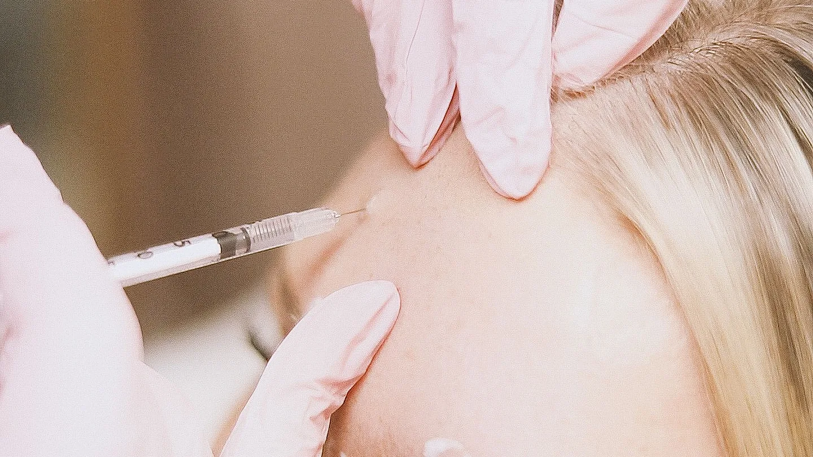

Ästhetische Medizin · Chemnitz
Botulinumtoxin
in Chemnitz
Gezielte Faltenbehandlung für ein frisches, natürliches Aussehen – sanft dosiert und fachärztlich durchgeführt im Dermatologischen Laserzentrum Häusler-Mehlhorn.
Entspannte Mimik, natürlicher Ausdruck
Botulinumtoxin entspannt gezielt die Muskulatur, die für mimische Falten verantwortlich ist – etwa Zornesfalte, Stirnfalten und Krähenfüße. Das Ergebnis wirkt frisch und erholt, ohne maskenhaft zu sein.
Entscheidend ist die richtige Dosierung durch erfahrene Hand. Wir behandeln bewusst zurückhaltend, damit Ihre Mimik natürlich bleibt und Sie einfach ausgeruhter aussehen.
→ Ratgeber: Botox in Chemnitz – Ablauf, Kosten & Wirkung
Ein Einblick in die Behandlung

Symbolbild einer vergleichbaren Behandlung.
So läuft es ab
Beratung & Analyse
Wir besprechen Ihre Wünsche und analysieren Ihre Mimik für ein natürliches Ergebnis.
Behandlung
Mit feinsten Nadeln wird das Präparat präzise gesetzt – in nur wenigen Minuten.
Wirkungseintritt
Nach wenigen Tagen zeigt sich das Ergebnis, voll ausgeprägt nach etwa zwei Wochen.
Kontrolle
Auf Wunsch schauen wir nach und feinjustieren – für Ihr optimales Resultat.
Ihre Vorteile bei uns
Botox / Faltenbehandlung – Ihre Fragen
Sieht das Ergebnis natürlich aus?
Ja – bei richtiger, zurückhaltender Dosierung bleibt Ihre Mimik erhalten. Sie wirken einfach frischer und entspannter, nicht maskenhaft.
Wie lange hält die Wirkung?
In der Regel etwa drei bis sechs Monate. Danach lässt sich die Behandlung bei Bedarf auffrischen.
Ist die Behandlung schmerzhaft?
Die feinen Einstiche sind kaum spürbar. Die Behandlung dauert nur wenige Minuten und kommt ohne Ausfallzeit aus.
Wann kann ich wieder in den Alltag?
Direkt im Anschluss. Wir geben Ihnen einige einfache Verhaltenshinweise für die ersten Stunden mit.
Bereit für den ersten Schritt?
Vereinbaren Sie Ihr persönliches Beratungsgespräch – wir beraten Sie individuell und ehrlich.
Leipziger Straße 137, 09113 Chemnitz · Mo – Do 08:00–18:00 · Fr 08:00–14:00
Hinweis: Diese Seite dient der allgemeinen Information und ersetzt keine ärztliche Beratung. Behandlungsergebnisse sind individuell verschieden; ein bestimmtes Ergebnis kann nicht zugesichert werden. Das Video im Kopfbereich wurde mit künstlicher Intelligenz erzeugt, die übrigen Aufnahmen sind Symbolbilder. Sie zeigen weder reale Patientinnen und Patienten noch tatsächliche Aufnahmen aus unserer Praxis.